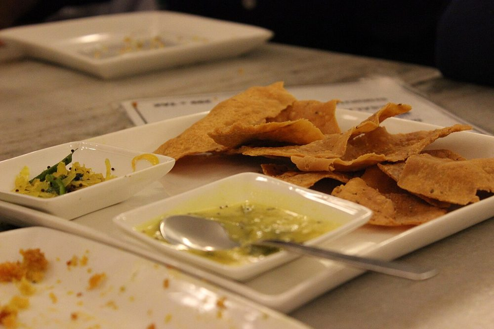

Allergens: none of the ten listed below
Ingredients
Quantities for 4.
- 250g, coarse ground if you can get it Besan
- 1/2 tsp Baking Sodastanding in for papad khar, the traditional alkaline salt
- 1 tsp, crushed Ajwain
- 3/4 tsp, coarsely ground Black Pepper
- 1/4 tsp Turmericoptional
- 3 tbsp for the dough, plus 1 litre for frying Neutral Oil
- about 100ml, warm Water
- 8, slit Green Chillifried alongside and salted, the classic accompanimentoptional
- 1 tsp Salt
Cookware
stovetop, kadhai
Checked against the ingredient list for ten allergens: milk, egg, fish, crustaceans, tree nuts, peanuts, sesame, mustard, soy and gluten. Brands vary, so read the label on anything new to you.
Before you start
- Dissolve the baking soda and salt in the warm water before it touches the flour, so the alkali is evenly distributed.
- The dough needs 20 minutes covered rest; it becomes stretchy and stops tearing under the palm.
- Clear a long stretch of oiled worktop or the back of a steel tray. Fafda is pressed out, not rolled, and needs room.
Method
- Mix the besan, ajwain, black pepper and turmeric in a wide bowl.
- Rub in the 3 tbsp oil until the mixture holds its shape when squeezed.
- Add the soda-and-salt water gradually and knead 8 minutes into a smooth, firm, elastic dough.Knead it properly. Underworked dough gives brittle fafda instead of the signature chew.
- Cover and rest 20 minutes.
- Pinch off a walnut-sized piece, place it on an oiled surface, and press it away from you with the heel of your palm into a long strip about 12cm by 3cm.One firm continuous push. Repeated pressing makes ragged, uneven strips.
- Lift the strip with a flat scraper and lay it on an oiled tray while you press the rest.
- Heat the frying oil to 175C. A scrap of dough should rise steadily, not violently.Too hot and the fafda browns before it dries; too cool and it drinks oil.
- Slide in 3-4 strips at a time and fry 2-3 minutes, turning once, until pale gold and no longer bubbling hard.
- Drain on a rack, not paper, so both faces stay crisp.
- Fry the slit green chillies for 30 seconds, salt them, and serve alongside with kadhi or papaya sambharo.
Storage
Keeps 3 days in an airtight tin at room temperature and stays crisp. Do not refrigerate. The damp turns it leathery. Refresh in a 150C oven for 5 minutes.
Nutrition Good estimate
Medium protein: 14 g a serving, 10% of the calories
| Per serving136 g | Per 100 g | |
|---|---|---|
| Calories | 557 kcal | 411 kcal |
| Protein | 14.4 g | 11 g |
| Carbohydrate | 38.6 g | 28 g |
| of which sugars | 7.3 g | 5 g |
| Fibre | 7.6 g | 6 g |
| Fat | 38.8 g | 29 g |
| of which saturated | 4.0 g | 3 g |
| of which unsaturated | 32.3 g | 24 g |
Estimated from raw ingredients using USDA FoodData Central.
More like this: Vegan Indian recipes · Vegetarian Indian recipes · Gluten-free Indian recipes · Dairy-free Indian recipes · No onion no garlic recipes · Gujarati recipes
Times, yields, allergens and nutrition are guidance. Use your own judgement on doneness and on storing. More in About.